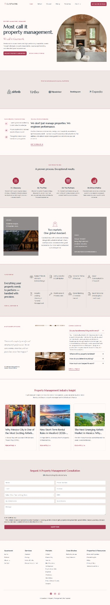

← Back to Work
Property · WordPress
Guestwork Property Management
The challenge
Help rental owners understand the service and reach consultation quickly.
Key decisions
- Write around owner intent.
- Explain the service before the CTA.
- Keep consultation visible.
The improved journey
Rental owners can see whether the service fits and move toward consultation.